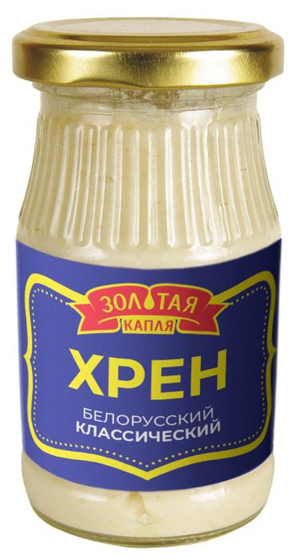
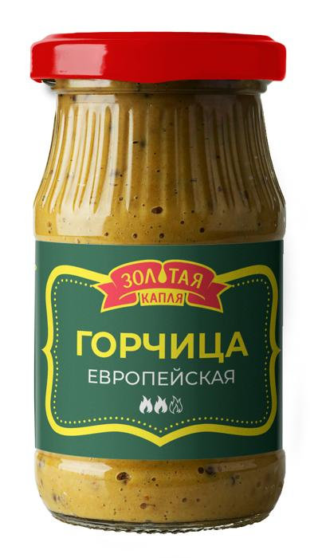
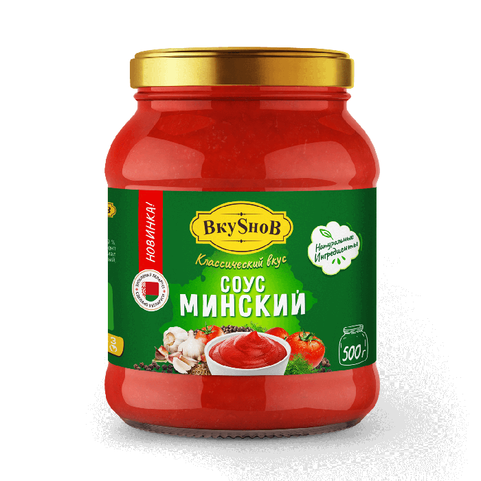
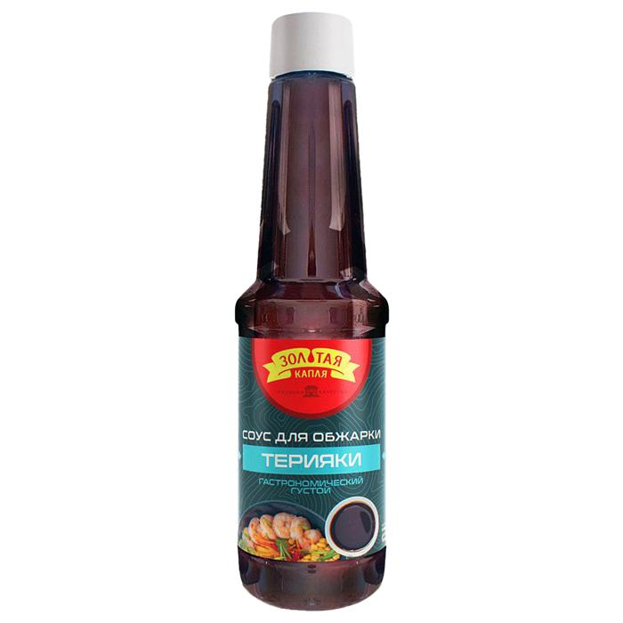

01МайонезКлассический майонез на яичном желтке и растительном масле. Без ГМО, искусственных ароматизаторов и красителей. 02СоусМайонезные соусы для холодных и горячих блюд: «Веган», «Бургер», «Тар-тар», «Грибной», «Сливочно-чесночный».Открывается шаблон категории на примере «Майонеза»
02СоусМайонезные соусы для холодных и горячих блюд: «Веган», «Бургер», «Тар-тар», «Грибной», «Сливочно-чесночный».Открывается шаблон категории на примере «Майонеза» 03КетчупТоматный, классический, шашлычный, барбекю и острый с красным перцем.Открывается шаблон категории на примере «Майонеза»
03КетчупТоматный, классический, шашлычный, барбекю и острый с красным перцем.Открывается шаблон категории на примере «Майонеза» 04ХренХрен столовый «Белорусский»: классический и со свёклой.Открывается шаблон категории на примере «Майонеза»
04ХренХрен столовый «Белорусский»: классический и со свёклой.Открывается шаблон категории на примере «Майонеза» 07СпредСпред растительно-жировой «Сливочный» с Омега-3 и провитамином А.Открывается шаблон категории на примере «Майонеза»
07СпредСпред растительно-жировой «Сливочный» с Омега-3 и провитамином А.Открывается шаблон категории на примере «Майонеза» 08Масло растительноеРапсовое, подсолнечно-кукурузное, подсолнечно-оливковое, рапсово-подсолнечное.Открывается шаблон категории на примере «Майонеза»
08Масло растительноеРапсовое, подсолнечно-кукурузное, подсолнечно-оливковое, рапсово-подсолнечное.Открывается шаблон категории на примере «Майонеза» 09Томатная группаСоусы томатные «Краснодарский», «Минский», «Томатный классический» и паста томатная.Открывается шаблон категории на примере «Майонеза»
09Томатная группаСоусы томатные «Краснодарский», «Минский», «Томатный классический» и паста томатная.Открывается шаблон категории на примере «Майонеза»
02СоусМайонезные соусы для холодных и горячих блюд: «Веган», «Бургер», «Тар-тар», «Грибной», «Сливочно-чесночный».Открывается шаблон категории на примере «Майонеза»03КетчупТоматный, классический, шашлычный, барбекю и острый с красным перцем.Открывается шаблон категории на примере «Майонеза»04ХренХрен столовый «Белорусский»: классический и со свёклой.Открывается шаблон категории на примере «Майонеза»
05Горчица«Европейская», «Нежная», «Аппетитная».Открывается шаблон категории на примере «Майонеза»
06МаргаринДля выпечки дома и для производств: фасованный и в ящиках по 20 кг.Открывается шаблон категории на примере «Майонеза»07СпредСпред растительно-жировой «Сливочный» с Омега-3 и провитамином А.Открывается шаблон категории на примере «Майонеза»08Масло растительноеРапсовое, подсолнечно-кукурузное, подсолнечно-оливковое, рапсово-подсолнечное.Открывается шаблон категории на примере «Майонеза»09Томатная группаСоусы томатные «Краснодарский», «Минский», «Томатный классический» и паста томатная.Открывается шаблон категории на примере «Майонеза»
10Гастрономические соусыТерияки для обжарки, кунжутный, барбекю.Открывается шаблон категории на примере «Майонеза»
11Жир кулинарный и кондитерскийЖиры для пищевых производств и кондитерских цехов.Открывается шаблон категории на примере «Майонеза»